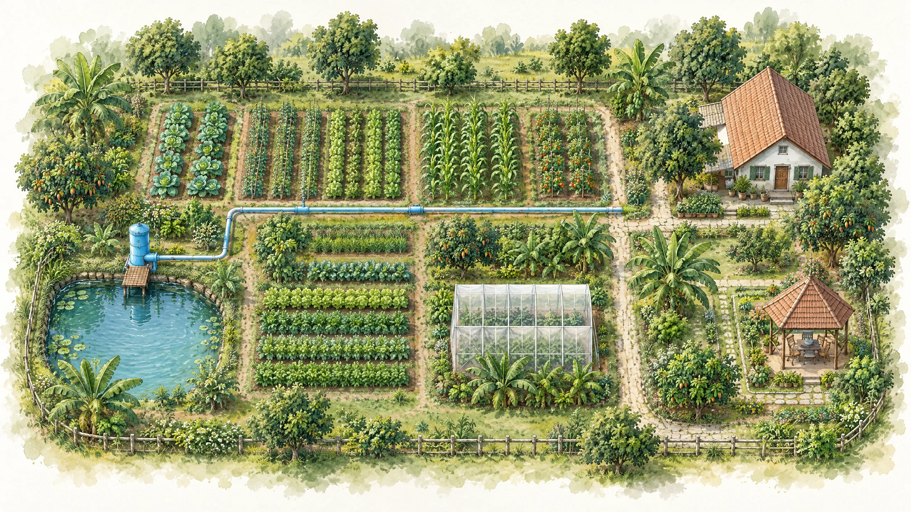

❧สวนลุงนะ · SMART FARM
ภาพรวมสวนวันนี้
ควบคุม ดูแล และติดตามทุกอย่างในสวนได้จากที่เดียว
●แผนผังสวน
คลิกที่อุปกรณ์เพื่อเปิดหน้าควบคุม

❧“สวนที่ดี ไม่ได้โตแค่พืชพรรณ แต่เติบโตพร้อมกับความสุข”
เกษตรสมัยใหม่
เพื่อชีวิตที่สมดุล
◉IRRIGATION CONTROL
ระบบน้ำ
ควบคุมการให้น้ำและอุปกรณ์ที่เกี่ยวข้อง แบบเรียลไทม์
สถานะอุปกรณ์ยังไม่มีข้อมูลโหมดยังไม่มีข้อมูล
⚙ควบคุมอุปกรณ์
สั่งงานรีเลย์และตั้งค่าโหมดการทำงาน
โหมดการทำงานจาก ESPยังไม่มีข้อมูล
◷ตารางเวลา
ตั้งเวลาเปิด–ปิดอุปกรณ์อัตโนมัติ
ⓘคำสั่งจะทำงานเมื่ออุปกรณ์ยืนยันสถานะ และใช้เวลาของ ESP8266
ความปลอดภัยESP8266 เป็นผู้ควบคุมรีเลย์และ safety logic · Dashboard ไม่เปลี่ยนสถานะล่วงหน้า